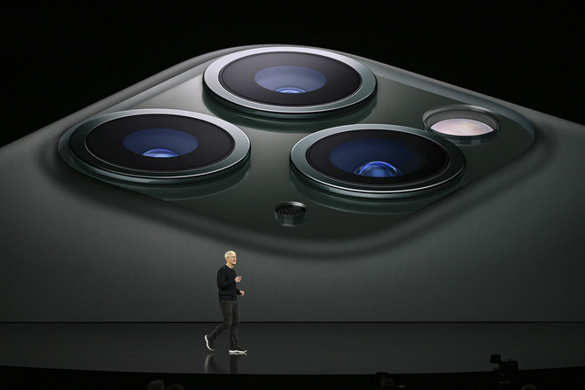
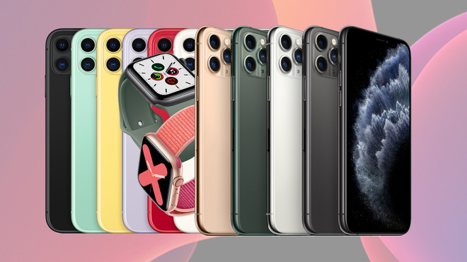
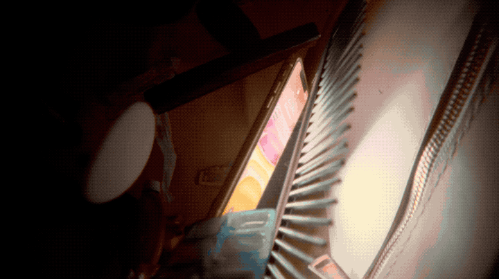

4 chi tiết nhỏ cho thấy việc thiết kế ở Apple đang thay đổi như thế nào sau khi không còn Jony Ive
Sự kiện iPhone vừa qua đang cho ta cái nhìn đầu tiên về khả năng thiết kế của Apple khi không còn Jony Ive.
Sự kiện iPhone 2019 của Apple đã mang đến cho chúng ta đúng như những gì được kỳ vọng: các nâng cấp như thường lệ cho iPhone (lần này với 3 camera sau), Apple Watch mới (với màn hình có thể liên tục hiển thị thời gian) và một iPad mới.
Nhưng có một điều khác với mọi năm khi hiện đang là thời điểm chứng kiến sự ra đi của huyền thoại thiết kế Jony Ive. Dù ít hay nhiều, điều đó chắc chắn sẽ ảnh hưởng đến thiết kế của Apple cho các sản phẩm ra mắt lần này. Nhưng những điều đó khó có thể nhận ra qua những gì Apple nói về các sản phẩm mới của mình, thay vào đó, bạn cần phải nhìn vào những gì họ không nói hoặc các chỉ dẫn đơn giản cho điều đó.
Dưới đây là một vài chi tiết cho thấy thiết kế của Apple đang thay đổi như thế nào:
Kỷ nguyên của những sản phẩm với các màu sắc tối giản – trắng, đen, xám (và tất nhiên cả vàng hồng) – đã kết thúc đối với Apple.
Dấu hiệu cho sự kết thúc đó đã lộ diện từ tuần trước khi các nguồn tin địa phương thông báo về cửa hàng Apple Store được tu sửa lại trên đại lộ Fifth Avenue với vẻ ngoài đầy các màu sắc lung linh, huyền ảo để thay thế cho hộp kính mộc mạc đơn giản trước đây.
Và trên sân khấu đêm qua, các quan chức Apple cũng trình diễn các phiên bản iPhone với đầy màu sắc mới, những gam màu chưa từng được thấy lại kể từ khi chiếc iPhone 5C ra mắt vào năm 2013 cho đến nay. Chiếc iPhone 11 mới sẽ có màu tím, vàng, đỏ và màu xanh bọt biển. iPhone 11 Pro còn được bổ sung thêm màu xanh lục kim loại nữa. Lần cuối cùng những bộ khung nhôm có các màu sắc mạnh mẽ này từ thời chiếc iPod Mini và Nano cũng như những chiếc iMac ra mắt từ những năm 1990.
Cho dù là để thay đổi phong cách quen thuộc của mình, hay dựa trên thực tế rằng, Apple hiện đã trở nên quá phổ biến, thương hiệu về sự tối giản độc đáo của công ty có lẽ đã đạt tới cảnh giới của mình.
Trong sự kiện đêm qua, bên cạnh việc ra mắt giới thiệu các phiên bản Apple Watch mới, Apple còn công bố về một dịch vụ tùy chỉnh trong các cửa hàng bán lẻ của mình có tên "Apple Watch Studio". Với dịch vụ này, bạn có thể tùy chỉnh bộ khung, dây đeo giữa gần 1.000 khả năng kết hợp khác nhau để cá nhân hóa sự lựa chọn của mình. Hơn thế nữa, Apple còn cung cấp dịch vụ khắc laser miễn phí cho nhiều sản phẩm của Apple.
Cho dù đã rời khỏi vị trí Phó chủ tịch về thiết kế của Apple để thành lập studio thiết kế riêng của mình, Jony Ive vẫn xuất hiện trong sự kiện iPhone vừa qua. Nhưng lần này lại khác biệt so với trước đây: bạn sẽ không còn nghe ông nói nữa.

Trong hàng loạt đoạn video giới thiệu sản phẩm Apple đêm qua, giọng đọc truyền cảm của Ive khi chia sẻ về các tính năng mới đã không còn nữa. Từ nhiều năm nay, Ive chính là người đã giới thiệu các thành quả mới do nhóm thiết kế của ông góp phần tạo nên ra công chúng. Không chỉ là việc thay thế người giới thiệu, sự thiếu vắng của ông cũng làm thay đổi bản thân thương hiệu về thiết kế của Apple.
Đối với nhiều người dùng, điểm yếu lớn nhất của iPhone không phải là pin, kết nối hay camera. Đó là độ bền sản phẩm – đặc biệt lớp kính trên màn hình có xu hướng nứt vỡ mỗi khi có va chạm mạnh. Dĩ nhiên, Apple đang làm mọi thứ có thể để khắc phục các vấn đề cố hữu về độ bền này. Tuy nhiên, họ lại tránh không "nói ra" điều đó đối với iPhone 11.
Công ty cho biết, những chiếc điện thoại mới của họ sẽ có "lớp kính bền chắc nhất từ trước đến" và chia sẻ một đoạn video với các hình ảnh iPhone 11 liên tục bị rơi và va chạm, dường như để chiếc iPhone mới tự truyền đi thông điệp về sự bền vững trong thiết kế của mình. Thế nhưng liệu đó chỉ là một thông điệp quảng cáo hay thực sự là một cải tiến về thiết kế, chỉ có thời gian mới có thể trả lời được.
Dù mang thông điệp "Chỉ bằng sự sáng tạo" nhưng Apple lại không thực sự mang đến sự sáng tạo đột biến nào lên sân khấu, nhưng những gì họ trình diễn cho thấy, Apple có thể và sẽ tiếp tục cải thiện thiết kế sản phẩm của mình – cho dù tại thời điểm này, điều đó nghĩa là mang xu hướng thiết kế của cuối những năm 90 quay trở lại, hay sửa chữa các sai sót trong sản phẩm và khám phá những giọng đọc mới thay thế cho Jony Ive. Nếu Apple làm được tất cả những điều này, thiết kế của họ sẽ tiếp tục thú vị thêm một thập kỷ nữa.